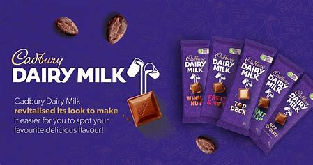

- Cadbury Dairy Milk is a British brand of milk chocolate manufactured by Cadbury.
- It was introduced in the UK in June 1905 and now consists of a number of products.
- Every product in the Dairy Milk line is made with exclusively milk chocolate.
- In 2014, Dairy Milk was ranked the best-selling chocolate bar in the UK.
- It is manufactured and distributed by the Hershey Company in the United States under licence from Cadbury.
- The chocolate is now available in many countries, including China, India, Sri Lanka,
Pakistan, the Philippines, Indonesia, Kazakhstan and Bangladesh.